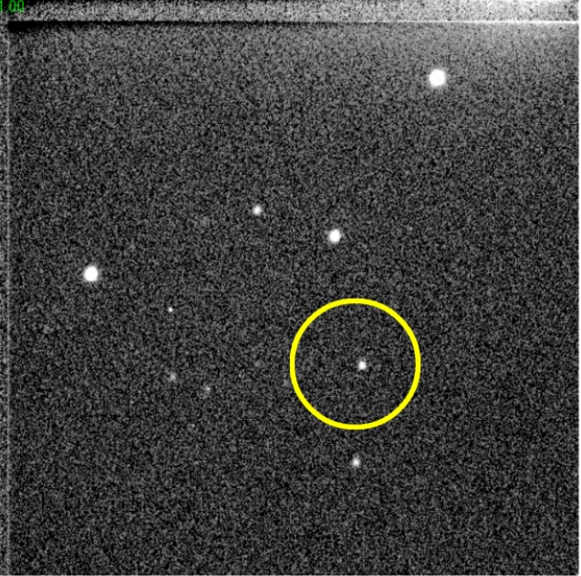
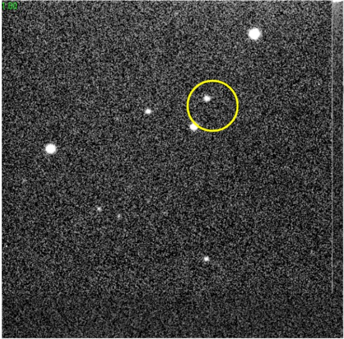

Modul Astrometri Asteroid - Akses Guru
Mari Kita Telusuri Jejak Asteroid!
CLEA
Astrometri dalam laporan ini dilakukan menggunakan aplikasi CLEA (Contemporary Laboratory Experiences in Astronomy), yang mensimulasikan pengamatan asteroid terhadap bintang-bintang latar belakang. Dengan membandingkan posisi relatif asteroid terhadap bintang-bintang yang tercatat dalam katalog referensi, koordinat langit asteroid dalam sistem koordinat ekuatorial (Right Ascension dan Declination) dapat ditentukan.
Simulasi ini dilakukan untuk menentukan posisi asteroid dalam koordinat ekuatorial. Dengan demikian, dapat ditentukan jarak asteroid dengan bumi untuk memprediksi orbit asteroid di masa mendatang.
Persiapan
Untuk melakukan astrometri terhadap asteroid, perlu dilakukan terlebih dahulu instalasi software Astrometry of Asteroid. Software Astrometry of Asteroid dapat diunduh melalui tautan:
Akuisisi data posisi asteroid dilakukan dengan menggunakan aplikasi Astrometry of Asteroid, salah satu proyek CLEA (Contemporary Laboratory Experiences in Astronomy) yang dikembangkan oleh Departemen Fisika, Gettysburg College. Data diperoleh dengan membandingkan posisi relatif asteroid terhadap bintang-bintang yang tercatat dalam katalog referensi dalam koordinat ekuatorial. Terdapat dua katalog referensi yang biasanya digunakan, yaitu katalog FK5 dan Hubble Space Telescope Guide Star Catalog (GSC). Namun, pada aplikasi Astrometry of Asteroid ini, hanya disediakan katalog GSC. Katalog GSC digunakan sebagai referensi karena katalog ini mencatat hampir 20 juta bintang yang memiliki magnitudo >16, sementara katalog FK5 hanya memiliki 3522 data bintang. Secara rinci, tahapan akuisisi data asteroid sebagai berikut:
Mengidentifikasi Asteroid
Prosedur yang dilakukan untuk mengidentifikasi asteroid adalah sebagai berikut:
- Memuat gambar benda langit yang diambil dari katalog GSC melalui menu File >> Load Image >> Image 1 >> 92JB05.
- Untuk menampilkan gambar, digunakan menu Image >> View/Adjust >> Image 1 >> 92JB05.
- Titik-titik yang tergambar merupakan bintang yang jauh kecuali satu objek, yang mana objek tersebut adalah asteroid.
- Selanjutnya, memunculkan gambar lain (92JB07) yang diambil 10 menit dari citra sebelumnya (92JB05) dengan cara yang sama seperti pada langkah a-c.
- Menyelaraskan kedua gambar dengan menggunakan menu Image >> Blink.
- Akan muncul gambar 1 >> klik salah satu bintang yang terang >> continue >> klik satu bintang lain.
- Klik continue, akan muncul gambar 2, samakan dengan gambar 1. Klik bintang yang sebelumnya ditandai pada gambar 1.
- Klik blink, layar selanjutkan akan berkedip-kedip menunjukkan gambar 1 dan gambar 2 secara bergantian.
- Mengamati pergerakan titik-titik pada kedua gambar. Titik yang cenderung tidak mengalami perubahan posisi merupakan bintang, sementara titik yang posisinya mengalami perubahan diidentifikasi sebagai asteroid.
- Klik stop untuk menghentikan blinking.
- Melakukan kembali prosedur yang sama untuk 92JB08, 92JB09, 92JB10, 92JB12 dan 92JB14. Semua gambar dibandingkan dengan 92JB05.
Menentukan Posisi Asteroid pada Bola Langit
Tahap ini dilakukan untuk menentukan koordinat asteroid pada bola langit dengan menggunakan koordinat equatorial. Penentuan ini dilakukan dengan melalui proses interpolarisasi, dimana dilakukan komparasi posisi asteroid pada gambar dengan koordinat bintang yang telah ada. Prosedur yang dilakukan dalam menentukan posisi asteroid pada bola langit adalah:
- Memuat Gambar 1 (92JB05) pada menu File >> Load Image Files >> Image 1 >> 92JB05.
- Klik menu Images >> Measure >> Image 1.
- Akan muncul jendela untuk konfirmasi tanggal dan waktu (disesuaikan dengan tanggal dan waktu yang ditetapkan oleh manual book pada Tabel 2 >> Ok.
- Akan muncul jendela lain untuk mengkonfirmasi koordinat titik tengah gambar, disesuaikan pula dengan informasi yang telah disediakan pada Tabel 2 Manual Book >> Ok.
- Mengatur field size pada 8” dan batas magnitudo 20 >> Ok.
- Menandai minimal 3 bintang yang diperkirakan sama antara GSC maupun 92JB05, bintang yang dipilih diberi tanda 1, 2, dan 3.
- Memilih 3 bintang referensi (kiri), kemudian mencatat RA, DEC, dan ID# nya, lalu memasukkan pada Tabel 2 >> Select >> Ok (pada Select Reference Star).
- Pointing bintang 1, 2, 3 pada gambar 92JB05 >> Ok
- Pointing ke unkown star (asteroid) >> Ok
- Informasi posisi asteroid pada koordinat ekuatorial akan muncul >> Record Data.
- Melakukan prosedur yang sama untuk gambar 92JB07, 92JB08, 92JB09, 92JB10, 92JB12 dan 92JB14.
Hasil Akuisisi Data
Untuk mengidentifikasi apakah benda langit yang tertangkap pada citra yang disediakan oleh aplikasi ini adalah asteroid, digunakan metode blinking. Metode ini bekerja dengan cara membandingkan dua gambar yang disediakan oleh katalog GSC. Dengan membandingkan dua gambar benda langit yang diambil di tempat yang sama namun pada waktu yang berbeda, kita dapat melihat objek yang bergerak dalam rentang waktu tersebut. Perpindahan bintang yang jauh biasanya tidak begitu signifikan, karena jaraknya yang sangat jauh dari bumi. Asteroid yang letaknya tidak terlalu jauh dari bumi, akan menunjukkan perubahan posisi yang signifikan dalam selang waktu beberapa menit. Identifikasi asteroid menggunakan metode blinking dilakukan pada 7 citra yang tersedia pada aplikasi CLEA Astrometry of Asteroid.
Hasil identifikasi yang menunjukkan posisi asteroid pada masing-masing citra disajikan pada Tabel 1.
| No. | Referensi | Gambar | Hasil Blinking |
|---|---|---|---|
| 1 |
92JB05 |
92JB07 |
Asteroid 07 |
| 2 |
92JB05 |
92JB08 |
Asteroid 08  |
| 3 |
92JB05 |
92JB09 |
Asteroid 09 |
| 4 |
92JB05 |
92JB10
|
Asteroid 10  |
| 5 |
92JB05 |
92JB12 |
Asteroid 12 |
| 6 |
92JB05 |
92JB14 |
Asteroid 14 |
Berikutnya, dilakukan identifikasi posisi Bintang 1992JB menggunakan fitur measure pada menu Images. Koordinat Bintang 1992JB dapat diketahui dengan melakukan komparasi citra 1992JB dengan citra katalog GSC. Katalog GSC menyediakan citra bintang jauh (latar belakang) yang memiliki konfigurasi sama dengan yang tersedia pada citra bintang 1992JB. Proses komparasi citra 1992JB dengan katalog GSC dapat dilihat pada Gambar 1.
Bintang yang dinilai sama pada kedua citra ditandai sebagai bintang referensi #1, #2, dan #3. Astrometry of Asteroid akan memberikan data koordinat bintang referensi yang telah teridentifikasi. Hasil identifikasi koordinat bintang referensi disajikan pada Tabel 2.
| Bintang Referensi | ID# | RA (h m s) | DEC (° ' ") |
|---|---|---|---|
| #1 | 00936-00007 | 15 30 46.56 | 11 15 00.8 |
| #2 | 00936-00754 | 15 30 39.39 | 11 15 14.2 |
| #1 | 00936-00017 | 15 30 36.23 | 11 16 20.8 |
Dengan mengetahui koordinat bintang referensi pada citra 1992JB, maka aplikasi Astrometry of Asteroid dapat memperkirakan posisi asteroid yang telah diidentifikasi sebelumnya. Koordinat asteroid 1992JB disajikan pada Tabel 3.
| Nama File | Waktu (UT) | RA (h m s) | DEC (° ' ") |
|---|---|---|---|
| 92JB05 | 04 53 00 | 15 30 38.70 | 11 14 06.2 |
| 92JB07 | 05 03 00 | 15 30 38.71 | 11 14 14.5 |
| 92JB08 | 05 09 00 | 15 30 38.72 | 11 14 18.4 |
| 92JB09 | 06 37 30 | 15 30 38.70 | 11 14 26.8 |
| 92JB10 | 06 49 00 | 15 30 28.70 | 11 15 34.6 |
| 92JB12 | 06 57 00 | 15 30 38.69 | 11 15 41.2 |
| 92JB14 | 07 16 00 | 15 30 38.68 | 11 15 54.7 |